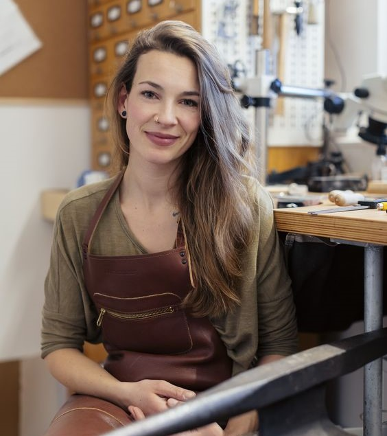

Немного о мастере
Создание украшений ручной работы не просто ремесло, это настоящее искусство, наполненное чувствами. Когда я берусь за новый проект, я испытываю невероятное вдохновение от возможности воплотить идеи.
Каждый материал, который я использую, становится частью чего-то большего уникального украшения, которое будет радовать своего владельца. Я всегда стараюсь учитывать пожелания клиента, чтобы создать изделие, которое будет отражать его индивидуальность и стиль.
Работая над каждым украшением, я вкладываю частичку своей души, стараясь сделать его не только красивым, но и наполненным теплом.
Адрес
Санкт-Петербург, проспект Ударников, 29к1, подъезд 1
Координаты: 59.952540, 30.478090


 © IvshinaGV
2024
© IvshinaGV
2024